[fr] Tutoriel d’analyse de séquences
Nicolas Robette
2023-04-02
Tutoriel.RmdMise en route
On commence par charger les extensions (packages)
nécessaires (qu’il faut au préalable installer si elles ne le sont pas
déjà) : TraMineR et TraMineRextras pour le traitement des séquences,
cluster pour les méthodes de classification
automatique, WeightedCluster en complément des
précédentes, FactoMineR et ade4 pour les analyses factorielles, RColorBrewer pour les palettes de couleurs, questionr et descriptio pour
les statistiques descriptives, dplyr et purrr pour la manipulation de données, ggplot2 pour les graphiques et seqhandbook l’extension qui accompagne le manuel.
library(TraMineR)
library(TraMineRextras)
library(cluster)
library(WeightedCluster)
library(FactoMineR)
library(ade4)
library(RColorBrewer)
library(questionr)
library(descriptio)
library(dplyr)
library(purrr)
library(ggplot2)
library(seqhandbook)On charge ensuite les données utilisées dans le manuel. Les données
sur les trajectoires d’emploi sont dans le tableau de données (data
frame) trajact : il y a 500 observations, i.e. 500
trajectoires individuelles, et 37 variables, correspondant au statut
d’activité observé chaque année entre 14 ans et 50 ans.
'data.frame': 500 obs. of 37 variables:
$ sact14: num 2 1 1 1 1 1 1 1 1 1 ...
$ sact15: num 2 1 1 1 1 1 1 1 1 1 ...
$ sact16: num 2 1 1 1 1 1 1 1 1 1 ...
$ sact17: num 2 1 1 1 1 1 2 2 2 2 ...
$ sact18: num 2 1 2 2 1 1 2 2 2 2 ...
$ sact19: num 2 3 2 2 1 1 2 2 2 2 ...
$ sact20: num 2 3 2 6 2 2 5 2 6 2 ...
$ sact21: num 2 3 2 2 2 2 5 6 6 2 ...
$ sact22: num 2 3 2 2 2 2 5 6 2 2 ...
$ sact23: num 2 3 2 2 2 2 5 2 2 2 ...
$ sact24: num 2 3 2 2 2 5 3 2 2 2 ...
$ sact25: num 2 3 2 2 2 5 3 2 2 2 ...
$ sact26: num 2 3 2 2 2 5 3 2 2 2 ...
$ sact27: num 2 3 2 2 2 2 3 2 2 2 ...
$ sact28: num 2 3 5 2 2 2 3 2 2 2 ...
$ sact29: num 2 3 2 2 2 2 3 2 2 2 ...
$ sact30: num 2 3 5 2 2 2 3 2 2 2 ...
$ sact31: num 2 3 5 2 2 2 3 2 2 2 ...
$ sact32: num 2 3 5 2 2 2 5 2 2 2 ...
$ sact33: num 2 3 5 2 2 2 5 2 2 2 ...
$ sact34: num 2 3 5 2 2 2 5 2 2 2 ...
$ sact35: num 2 3 5 2 2 2 2 2 2 2 ...
$ sact36: num 2 3 5 2 2 2 2 2 2 2 ...
$ sact37: num 2 3 5 2 2 2 2 2 2 2 ...
$ sact38: num 2 2 5 2 2 2 2 2 2 2 ...
$ sact39: num 2 2 5 2 2 2 2 2 2 2 ...
$ sact40: num 2 2 5 2 2 2 2 2 2 2 ...
$ sact41: num 2 2 5 2 2 2 2 2 2 2 ...
$ sact42: num 2 2 5 2 2 2 2 2 2 2 ...
$ sact43: num 2 2 5 2 2 2 2 2 2 2 ...
$ sact44: num 2 2 5 2 2 2 2 2 2 2 ...
$ sact45: num 2 2 3 2 2 2 2 2 2 2 ...
$ sact46: num 2 2 3 2 2 2 2 2 2 2 ...
$ sact47: num 2 2 3 2 2 2 2 2 2 2 ...
$ sact48: num 2 2 3 2 2 2 2 2 2 2 ...
$ sact49: num 2 2 3 2 2 2 2 2 2 2 ...
$ sact50: num 2 3 3 2 2 2 2 2 2 2 ...La première étape de l’analyse de séquences consiste à créer un
corpus de séquences, c’est-à-dire un objet de classe
stslist à l’aide la fonction seqdef. On
définit d’abord les labels des 6 états et une palette de 6 couleurs
(c’est facultatif: seqdef crée labels et palette de manière
automatique si on ne lui fournit pas).
# définition du corpus de séquences
labs <- c("études","temps plein","temps partiel","petits boulots","inactivité","serv. militaire")
palette <- brewer.pal(length(labs), 'Set2')
seqact <- seqdef(trajact, labels=labs, cpal=palette)Notre corpus de 500 séquences comporte 377 séquences distinctes, ce qui confirme l’intérêt d’utiliser une procédure statistique pour regrouper les séquences qui se ressemblent.
[1] 377Le chronogramme (state distribution plot) de l’ensemble des séquences fait apparaître la prépondérance de l’emploi à temps plein et le poids non négligeable de l’inactivité.
# chronogramme
seqdplot(seqact, xtlab=14:50, cex.legend=0.7)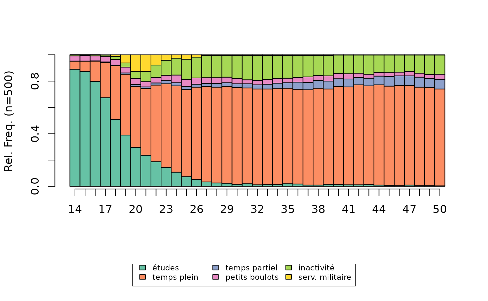
On charge également un tableau de données contenant quelques
variables socio-démographiques sur les individus. A noter, les variables
catégorielles sont au format factor.
'data.frame': 500 obs. of 9 variables:
$ annais : num 1950 1937 1933 1948 1944 ...
$ nbenf : Factor w/ 4 levels "aucun","un","deux",..: 4 3 3 3 3 2 4 4 4 1 ...
$ nbunion : Factor w/ 3 levels "aucune","une",..: 2 2 2 2 3 2 2 2 2 1 ...
$ mereactive : Factor w/ 2 levels "non","oui": 1 1 2 2 1 1 2 1 1 2 ...
$ sexe : Factor w/ 2 levels "homme","femme": 1 2 2 1 2 2 2 1 1 2 ...
$ PCS : Factor w/ 8 levels "NA","agric","indep",..: 7 8 5 7 6 5 6 7 7 4 ...
$ PCSpere : Factor w/ 8 levels "agric","indep",..: 7 1 5 2 6 3 6 5 6 6 ...
$ diplome : Factor w/ 4 levels "aucun","<bac",..: 1 2 2 2 3 4 2 2 2 2 ...
$ nationalite: Factor w/ 2 levels "francaise","etrangere": 1 1 1 1 1 1 1 1 1 1 ...Construction d’une matrice de distance
Indicateurs synthétiques
A titre d’exemple, on construit une matrice de distance à partir d’indicateurs décrivant le nombre d’épisodes dans les différents états. Le premier individu a passé l’ensemble de sa trajectoire en emploi à temps plein, alors que le second a connu un épisode de temps plein mais aussi un épisode d’études et deux de temps partiel.
nepi1 nepi2 nepi3 nepi4 nepi5 nepi6
1 0 1 0 0 0 0
2 1 1 2 0 0 0
3 1 2 1 0 2 0
4 1 2 0 0 0 1
5 1 1 0 0 0 0
6 1 2 0 0 1 0La matrice peut être calculée directement à partir des indicateurs ou après une étape d’analyse en composantes principales (ACP), ici en retenant les 5 premières dimensions.
# matrice de distance à partir des indicateurs
dissim <- dist(indics, method='euclidean') %>% as.matrix
# matrice de distance à partir des résultats d'une ACP
acp_coords <- PCA(indics, scale.unit=FALSE, ncp=5, graph=FALSE)$ind$coord
dissim <- dist(acp_coords, method='euclidean') %>% as.matrixD’autres indicateurs synthétiques (durées, états visités, etc.)
peuvent être calculés simplement à partir des fonctions
seqistatd, seqi1epi, seqifpos,
seqindic ou seqpropclust.
Disjonctif complet et AHQ
Dans le cas du codage sous forme de disjonctif complet, la matrice de distance peut être calculée directement, avec la distance euclidienne ou la distance du chi2, ou après une étape d’analyse en composantes principales (ACP) ou d’analyse des correspondances multiples (ACM), ici en retenant les 5 premières dimensions.
NB : map_df permet d’appliquer une même fonction à
l’ensemble des colonnes d’un tableau de données. Ici, cette fonction est
utilisée pour convertir les colonnes du format numérique vers le format
factor.
# codage disjonctif complet
disjo <- as.data.frame(tab.disjonctif(seqact))
disjo <- disjo[,colSums(disjo)>0]
# distance euclidienne
dissim <- dist(disjo, method='euclidean') %>% as.matrix
# distance du chi2
dissim <- map_df(disjo, as.factor) %>%
dudi.acm(scannf=FALSE, nf=ncol(disjo)) %>%
dist.dudi() %>%
as.matrix
# après une ACP
acp_coords <- PCA(disjo, scale.unit=FALSE, ncp=5, graph=FALSE)$ind$coord
dissim <- dist(acp_coords, method='euclidean') %>% as.matrix
# après une ACM
acm_res <- purrr::map_df(disjo, as.factor) %>%
MCA(ncp=5, graph=FALSE)
dissim <- dist(acm_res$ind$coord, method='euclidean') %>% as.matrixPour l’analyse harmonique qualitative (AHQ), le calcul de la matrice de distance peut se faire directement (distance du chi2) ou après une analyse factorielle des correspondances (AFC), ici en retenant les 5 premières dimensions.
# codage AHQ
ahq <- seq2qha(seqact, c(1,3,7,10,15,20,28))
ahq <- ahq[,colSums(ahq)>0]
# distance du chi2
dissim <- dudi.coa(ahq, scannf=FALSE, nf=ncol(ahq)) %>%
dist.dudi() %>%
as.matrix
# après une AFC
afc_coord <- CA(ahq, ncp=5, graph=FALSE)$row$coord
dissim <- dist(afc_coord, method='euclidean') %>% as.matrixOptimal Matching et alternatives
Pour l’Optimal Matching, la construction d’une matrice de
distance entre les séquences s’effectue avec la fonction
seqdist. Cela implique de définir également une matrice de
coûts de substitution entre les états (avec la fonction
seqsubm). Ici, les coûts de substitution sont constants et
égaux à 2 et le coût indel est égal à 1,5.
# construction de la matrice de distance
couts <- seqsubm(seqact, method="CONSTANT", cval=2)
dissim <- seqdist(seqact, method="OM", sm=couts, indel=1.5)D’expérience, l’Optimal Matching avec le paramétrage adopté
ici constitue un choix permettant de prendre en compte les différentes
dimensions de la temporalité des séquences - ordonnancement
(sequencing), calendrier (timing), durée (dans les
différents états ou des épisodes, duration et spell
duration). Si on souhaite privilégier l’une de ces dimensions, on
peut suivre les recommandations de Studer & Ritschard (2016, voir en
particulier pages 507-509), et choisir l’une des nombreuses autres
métriques implémentées dans l’extension TraMineR.
# sequencing
dissim <- seqdist(seqact, method="OMstran", otto=0.1, sm=couts, indel=1)
dissim <- seqdist(seqact, method="OMspell", expcost=0, sm=couts, indel=1)
dissim <- seqdist(seqact, method="SVRspell", tpow=0)
# timing
dissim <- seqdist(seqact, method="HAM", sm=couts)
dissim <- seqdist(seqact, method="CHI2", step=1)
# duration (distribution aver the entire period)
dissim <- seqdist(seqact, method="EUCLID", step=37)
# duration (spell lengths)
dissim <- seqdist(seqact, method="OMspell", expcost=1, sm=couts, indel=1)
dissim <- seqdist(seqact, method="LCS")A noter, les méthodes passant par le disjonctif complet ou l’AHQ sont
également implémentées dans la fonction seqdist (méthodes
“EUCLID” et “CHI2”).
Typologie de séquences
Construction d’une typologie
On réalise ensuite une classification ascendante hiérarchique (CAH)
avec le critère d’agrégation de Ward, à l’aide de la fonction
agnes de l’extension cluster.
NB : Avec un nombre élevé de séquences, la CAH peut nécessiter un
temps de calcul important. Il existe cependant une implémentation
nettement plus rapide dans l’extension fastcluster
(fonction hclust).
# classification ascendante hiérarchique
agnes <- as.dist(dissim) %>% agnes(method="ward", keep.diss=FALSE)Pour explorer les solutions d’une classification ascendante hiérarchique, on commence généralement par examiner le dendrogramme.
# dendrogramme
as.dendrogram(agnes) %>% plot(leaflab="none")Le graphique suivant combine dendrogramme et index plot: les séquences de l’index plot sont triées selon leur position dans le dendrogramme, lui-même représenté en marge du graphique.
# heatmap (dendrogramme + index plot)
seq_heatmap(seqact, agnes)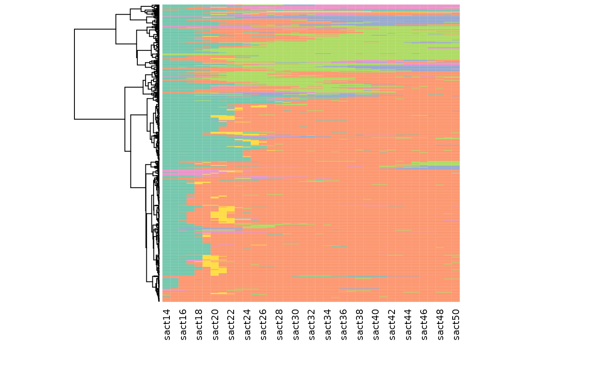
L’examen des sauts d’inertie peut également être utile pour déterminer le nombre de classes de la typologie. On voit par exemple qu’il y a une différence d’inertie notable entre les partitions en 5 et 6 classes.
# graphique des sauts d'inertie
plot(sort(agnes$height, decreasing=TRUE)[1:20], type="s", xlab="nombre de classes", ylab="inertie")Il existe aussi un certain nombre d’indicateurs de qualité des partitions (silhouette, Calinski-Harabasz, pseudo-R2, etc.; voir Studer, 2013).
# indicateurs de qualité
wardRange <- as.clustrange(agnes, diss=dissim)
summary(wardRange, max.rank=2) 1. N groups 1. stat 2. N groups 2. stat
PBC 5 0.79612318 4 0.79012613
HG 5 0.92899997 4 0.92259604
HGSD 5 0.92672338 4 0.92027518
ASW 3 0.53491169 2 0.52958820
ASWw 3 0.53862662 2 0.53182999
CH 2 156.86409716 3 103.74539004
R2 20 0.60648740 19 0.59473652
CHsq 2 324.53910100 3 245.89231855
R2sq 20 0.82862437 19 0.82073439
HC 5 0.04010082 4 0.04392402On représente ici graphiquement la qualité des partitions pour différents nombres de classes pour les indicateurs silhouette, pseudo-R2 et Calinski-Harabasz.
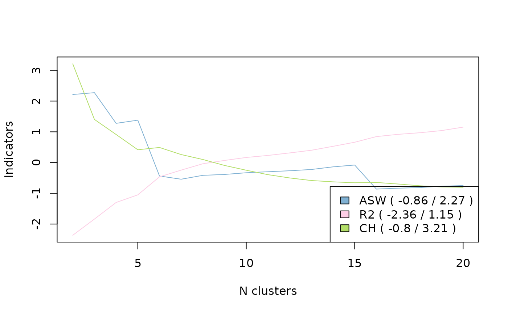
On opte au final pour une partition en 5 classes, en “coupant
l’arbre” de la CAH à l’aide de la fonction cutree.
# choix de la partition en 5 classes
nbcl <- 5
part <- cutree(agnes, nbcl)Il est possible de “consolider” la partition à l’aide de l’algorithme
PAM (Partition Around Medoids) et de la fonction
wcKMedoids de l’extension WeightedCluster. On
aboutit ainsi à une distribution des séquences entre les classes très
similaire (cf le tri croisant les classes avant et après consolidation)
mais la qualité de la partition consolidée est légèrement supérieure (le
R² passe de 61 à 64%).
# consolidation de la partition
newpart <- wcKMedoids(dissim, k=nbcl, initialclust=part, cluster.only=TRUE)
table(part, newpart) newpart
part 28 34 103 307 480
1 104 241 1 0 0
2 9 24 2 7 0
3 0 6 6 63 1
4 0 0 17 0 0
5 8 0 0 1 10
wcClusterQuality(dissim, part)$stats['R2sq'] %>% round(3) R2sq
0.607
wcClusterQuality(dissim, newpart)$stats['R2sq'] %>% round(3)R2sq
0.64 Si on souhaite conserver la partition consolidée :
part <- as.numeric(as.factor(newpart))NB : Autre option, la classification “floue”, ici avec l’algorithme
Fanny (extension cluster). A la différence de la CAH ou de
PAM, chaque séquence n’appartient pas à une seule classe mais se
caractérise par des degrés d’appartenance aux différentes classes. Le
tableau suivant présente les degrés d’appartenance aux 6 classes des 3
premières séquences du corpus. La première séquence appartient à 99% à
la classe 1, mais la seconde est plus “partagée”, principalement entre
les classes 2 et 5.
# classification floue (fuzzy clustering)
fanny <- as.dist(dissim) %>% fanny(k=5, metric='euclidean', memb.exp=1.2)
fanny$membership %>% round(2) %>% .[1:3,] [,1] [,2] [,3] [,4] [,5]
1 0.99 0.00 0.00 0.01 0.00
2 0.06 0.51 0.02 0.13 0.28
3 0.00 0.11 0.80 0.00 0.08Description de la typologie: graphiques
Les représentations graphiques permettent de se faire une idée rapide et intuitive de la nature des classes de la typologie. Le type de graphique le plus utilisé est le chronogramme (state distribution plot).
# chronogrammes de la typologie
seqdplot(seqact, group=part, xtlab=14:50, border=NA, cex.legend=0.8)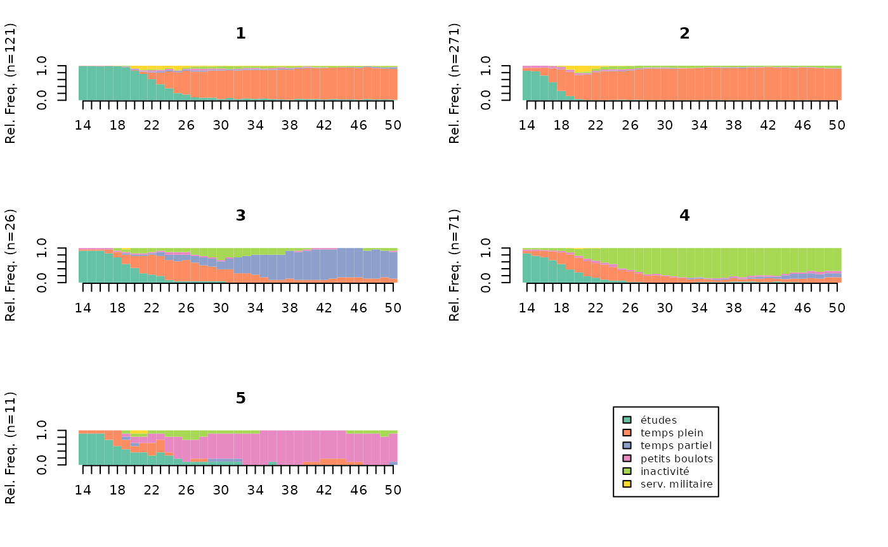
Les index plots (ou “tapis”) sont également très répandus.
# index plots de la typologie
seqIplot(seqact, group=part, xtlab=14:50, yaxis=FALSE, cex.legend=0.8)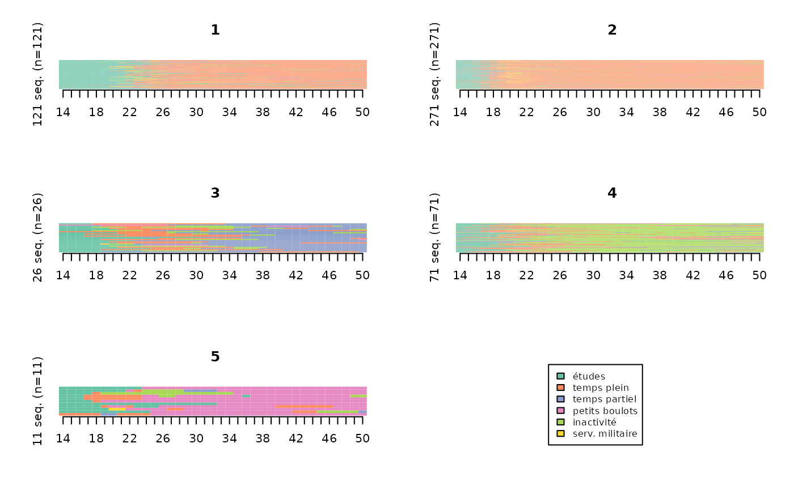
Les index plots sont souvent plus faciles à interpréter lorsqu’on trie les séquences, en particulier à partir d’une procédure de multidimensional scaling.
# index plots de la typologie, triés par multidimensional scaling
mds.order <- cmdscale(dissim,k=1)
seqIplot(seqact, sortv=mds.order, group=part, xtlab=14:50, yaxis=FALSE, cex.legend=0.8)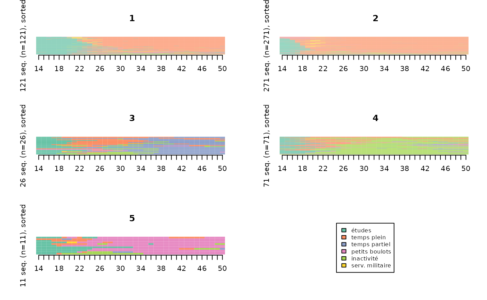
Ils peuvent également être “lissés”, pour les rendre plus lisibles.
Méthode des “smoothed MDS sequence plots” (Piccarreta, 2012):
smoothed <- seqsmooth(seqact, dissim, k=30)$seqdata
seqIplot(smoothed, sortv=mds.order, group=part, xtlab=14:50, yaxis=FALSE, cex.legend=0.8)
Méthode des “relative frequency sequence plots” (Fasang & Liao, 2013):
# relative frequency sequence plots
seqplot.rf(seqact, diss=dissim, group=part, xtlab=14:50, which.plot="medoids")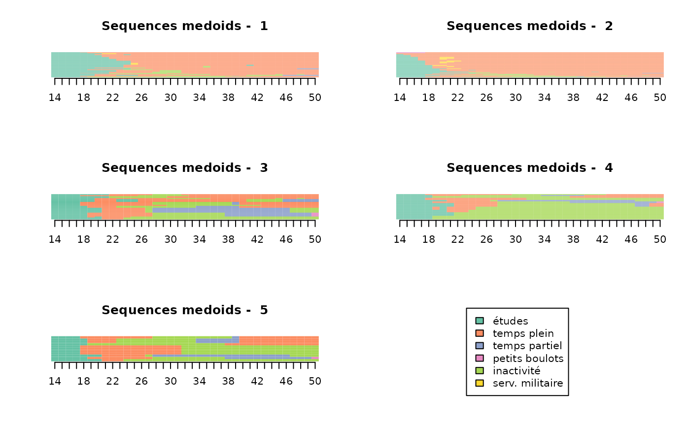
Les sequence frequency plots représentent, pour chaque classe, les 10 séquences les plus fréquentes (avec une épaisseur proportionnelle à leur fréquence).
# frequency plots
seqfplot(seqact, group=part, ylab="", xtlab=14:50, cex.legend=0.8)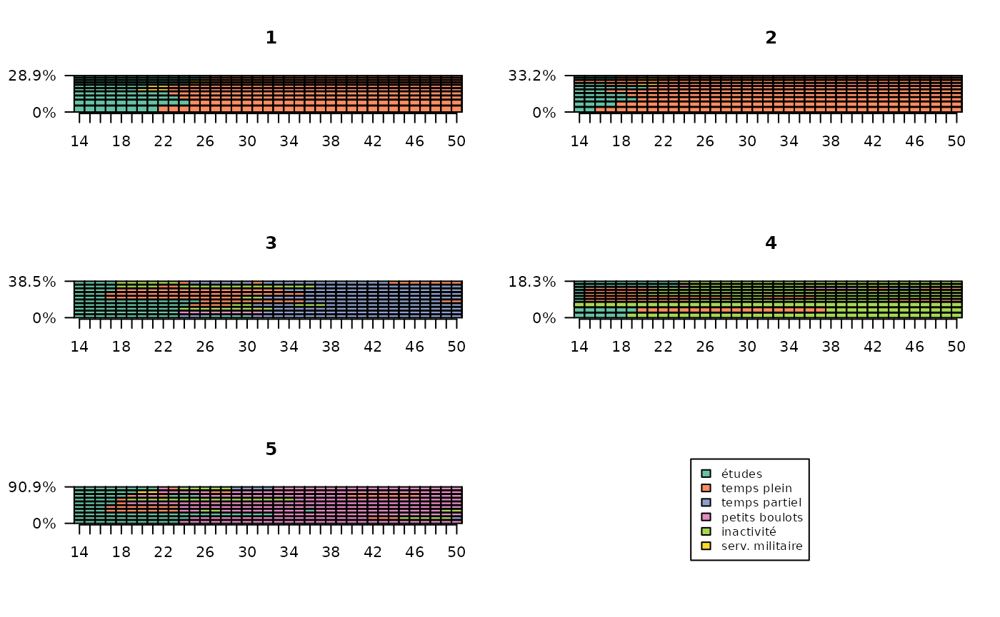
Les modal state sequence plots représentent, pour chaque classe, la séquence des états modaux pour chaque position dans le temps. A chaque position dans le temps, la hauteur de la barre est proportionnelle à la fréquence de l’état modal.
# modal state plots
seqmsplot(seqact, group=part, xtlab=14:50, cex.legend=0.8)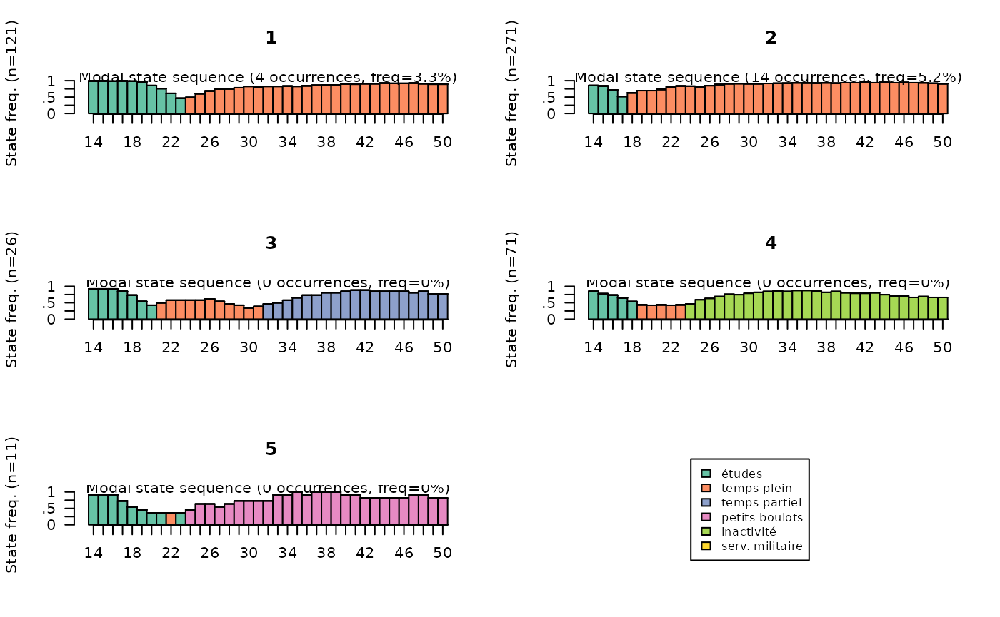
Description de la typologie: statistiques
La première étape de description statistique de la typologie consiste généralement à présenter le poids des classes. La classe 2 rassemble plus de la moitié des individus, alors que les classes 3 et 5 sont de très petite taille.
# effectifs et pourcentages
freq(part) n % val%
1 121 24.2 24.2
2 271 54.2 54.2
3 26 5.2 5.2
4 71 14.2 14.2
5 11 2.2 2.2Il est utile d’évaluer l’homogénéité des classes. Cela peut se faire à partir des distances intra-classes. Les classes 1 et 2 sont les plus homogènes.
# distances intra-classes
Dintra <- integer(length=nbcl)
for(i in 1:nbcl) Dintra[i] <- round(mean(dissim[part==i,part==i]),1)
Dintra[1] 18.3 15.2 30.2 28.4 24.3Les résultats sont convergents à partir des distances moyennes aux centres de classe :
# distances moyennes au centre de la classe
dissassoc(dissim, part)$groups n discrepancy
1 121 9.171231
2 271 7.617135
3 26 15.078402
4 71 14.208490
5 11 12.173554
Total 500 15.876208De même avec l’entropie transversale :
# entropie transversale moyenne par classe
entropie <- vector()
for(i in 1:nbcl) entropie[i] <- round(mean(seqstatd(seqact[part==i,])$Entropy),2)
entropie[1] 0.33 0.27 0.47 0.46 0.36Pour donner une vision plus détaillée de la forme des trajectoires de chaque classe, on calcule des indicateurs synthétiques, puis leur moyenne selon la classe de la typologie. La durée passée dans les états :
# durées dans les états selon la classe
dur <- seqistatd(seqact)
durees <- round(aggregate(dur, by=list(part), FUN=mean), 1)
rownames(durees) <- NULL
durees Group.1 1 2 3 4 5 6
1 1 10.2 23.1 0.7 0.7 1.3 1.0
2 2 3.5 29.9 0.4 0.9 1.7 0.6
3 3 6.3 9.2 16.4 1.0 4.0 0.0
4 4 5.0 7.1 1.2 1.6 22.0 0.1
5 5 7.0 3.6 0.6 22.8 2.7 0.2La part d’individus ayant connu au moins un épisode dans les états :
# au moins un épisode dans les états, selon la classe
epi <- seqi1epi(seqact)
episodes <- round(aggregate(epi, by=list(part), FUN=mean), 2)
rownames(episodes) <- NULL
episodes Group.1 epi1 epi2 epi3 epi4 epi5 epi6
1 1 1.00 0.99 0.16 0.14 0.32 0.36
2 2 0.86 1.00 0.06 0.17 0.31 0.35
3 3 0.92 0.73 1.00 0.15 0.62 0.04
4 4 0.86 0.75 0.24 0.24 1.00 0.03
5 5 0.91 0.82 0.27 1.00 0.36 0.09Ensuite, on croise la typologie avec les caractéristiques des individus. On commence par une analyse bivariée du type de trajectoire selon le sexe. Le V² de Cramer est de 0,40, indiquant une association notable. Les femmes sont très sur-représentées dans la classe 4 et secondairement dans la classe 3, alors que les hommes sont sur-représentés dans les classes 1 et 2 (les valeurs “phi” correspondent aux attractions ou répulsions entre modalités).
NB : Les deux objets part et socdem ne
doivent pas avoir été triés. Si c’est malgré tout le cas, il faut les
fusionner à partir d’un identfiant commun, ou les retrier selon l’ordre
initial.
asso <- assoc.twocat(factor(part), socdem$sexe)
asso$global$cramer.v[1] 0.401948
asso$local$phi homme femme
1 0.16239591 -0.16239591
2 0.18154113 -0.18154113
3 -0.17650554 0.17650554
4 -0.33493171 0.33493171
5 -0.02662907 0.02662907On examine ensuite les sur-représentations pour chaque classe de la
typologie à partir de l’ensemble des caractéristiques individuelles
présentes dans le tableau de données socdem. On constate
tout d’abord que seules trois variables ne semblent pas notablement
liées au type de trajectoire (mereactive, nbunion, nationalite). Pour ne
prendre que l’exemple de la classe 4, on voit que les femmes y sont
sur-représentées, ainsi que les individus ayant trois enfants ou plus,
sans diplôme ou de PCS inconnue (ce qui n’est certainement pas sans lien
avec l’inactivité).
$variables
variable measure association
1 sexe Cramer V 0.402
2 PCS Cramer V 0.362
3 diplome Cramer V 0.330
4 PCSpere Cramer V 0.202
5 nbenf Cramer V 0.146
6 mereactive Cramer V 0.130
7 nbunion Cramer V 0.094
8 nationalite Cramer V 0.057
9 annais Eta2 0.041
$bylevel
$bylevel$`1`
$bylevel$`1`$categories
categories pct.ycat.in.xcat pct.xcat.in.ycat pct.xcat.global phi
1 diplome.>bac 0.598 0.628 0.254 0.486
3 PCS.pcis 0.579 0.512 0.214 0.411
7 PCSpere.pcis 0.519 0.331 0.154 0.276
12 sexe.homme 0.319 0.595 0.452 0.162
16 nbenf.aucun 0.367 0.182 0.120 0.107
19 diplome.bac 0.342 0.223 0.158 0.101
21 PCS.oqual 0.098 0.033 0.082 -0.101
22 PCSpere.agric 0.106 0.041 0.094 -0.102
25 PCS.NA 0.111 0.066 0.144 -0.125
27 PCSpere.onqual 0.058 0.025 0.104 -0.147
28 diplome.aucun 0.075 0.041 0.134 -0.154
29 sexe.femme 0.179 0.405 0.548 -0.162
31 PCS.empl 0.107 0.107 0.242 -0.178
39 diplome.<bac 0.057 0.107 0.454 -0.393
$bylevel$`1`$continuous.var
variables median.x.in.ycat median.x.global mad.x.in.ycat mad.x.global cor
3 annais 1945 1943 4 5 0.08
$bylevel$`2`
$bylevel$`2`$categories
categories pct.ycat.in.xcat pct.xcat.in.ycat pct.xcat.global phi
5 diplome.<bac 0.722 0.605 0.454 0.330
8 PCS.oqual 0.878 0.133 0.082 0.202
10 sexe.homme 0.642 0.535 0.452 0.182
13 PCS.empl 0.678 0.303 0.242 0.154
14 PCSpere.oqual 0.670 0.262 0.212 0.133
18 PCSpere.onqual 0.692 0.133 0.104 0.103
32 sexe.femme 0.460 0.465 0.548 -0.182
33 PCS.NA 0.306 0.081 0.144 -0.195
35 PCS.pcis 0.308 0.122 0.214 -0.245
36 PCSpere.pcis 0.195 0.055 0.154 -0.297
38 diplome.>bac 0.228 0.107 0.254 -0.367
$bylevel$`2`$continuous.var
variables median.x.in.ycat median.x.global mad.x.in.ycat mad.x.global cor
5 annais 1942 1943 5 5 -0.102
$bylevel$`3`
$bylevel$`3`$categories
categories pct.ycat.in.xcat pct.xcat.in.ycat pct.xcat.global phi
11 sexe.femme 0.088 0.923 0.548 0.177
30 sexe.homme 0.009 0.077 0.452 -0.177
$bylevel$`3`$continuous.var
variables median.x.in.ycat median.x.global mad.x.in.ycat mad.x.global cor
1 annais 1947 1943 2 5 0.139
$bylevel$`4`
$bylevel$`4`$categories
categories pct.ycat.in.xcat pct.xcat.in.ycat pct.xcat.global phi
2 PCS.NA 0.542 0.549 0.144 0.470
4 sexe.femme 0.248 0.958 0.548 0.335
9 nbenf.trois ou + 0.235 0.535 0.324 0.184
15 diplome.aucun 0.239 0.225 0.134 0.109
17 mereactive.non 0.173 0.704 0.578 0.104
20 PCS.oqual 0.024 0.014 0.082 -0.101
23 mereactive.oui 0.100 0.296 0.422 -0.104
24 diplome.>bac 0.079 0.141 0.254 -0.106
26 PCS.pint 0.065 0.113 0.248 -0.127
34 PCS.pcis 0.009 0.014 0.214 -0.198
37 sexe.homme 0.013 0.042 0.452 -0.335
$bylevel$`4`$continuous.var
variables median.x.in.ycat median.x.global mad.x.in.ycat mad.x.global cor
4 annais 1942 1943 5 5 -0.079
$bylevel$`5`
$bylevel$`5`$categories
categories pct.ycat.in.xcat pct.xcat.in.ycat pct.xcat.global phi
6 PCS.agric 1 0.091 0.002 0.298
$bylevel$`5`$continuous.var
variables median.x.in.ycat median.x.global mad.x.in.ycat mad.x.global cor
2 annais 1948 1943 0 5 0.087Description de la typologie: parangons
Pour “incarner” la typologie, on recourt parfois aux parangons (medoids) des classes, dont on retrace de manière détaillée les trajectoires à partir d’informations non prises en compte dans le codage des trajectoires.
# parangon de chaque classe (numéros de ligne dans le fichier de données)
medoids(dissim, part)[1] 483 121 103 307 147Analyses non-typologiques
Distance à une séquence de référence
On définit ici une séquence “de référence” correspondant à une trajectoire d’emploi à temps plein en continu à partir de 18 ans, c’est-à-dire une séquence composée de 4 années d’études puis de 33 années d’emploi à temps plein. On calcule ensuite, pour chaque séquence, sa distance à la séquence de référence: dans quelle mesure s’écartent-elles de cette référence ?
ref <- seqdef(as.matrix("(1,4)-(2,33)"), informat="SPS", alphabet=alphabet(seqact))
distref <- seqdist(seqact, refseq = ref, method="OM", sm=couts, indel=1.5)On observe ensuite la distribution de ces écarts en fonction du sexe et du nombre d’enfants. On constate que les trajectoires des femmes s’écartent plus de la trajectoire d’emploi continu à temps plein que celles des hommes lorsqu’elles ou ils ont un ou plusieurs enfants. L’écart est particulièrement fort chez les femmes ayant trois enfants ou plus.
socdem %>% select(sexe,nbenf) %>%
mutate(distref=distref) %>%
ggplot(aes(x=nbenf, y=distref)) +
geom_boxplot(aes(fill=sexe), notch=T) +
xlab("nombre d'enfants") +
ylab("distance à la référence") +
theme_bw()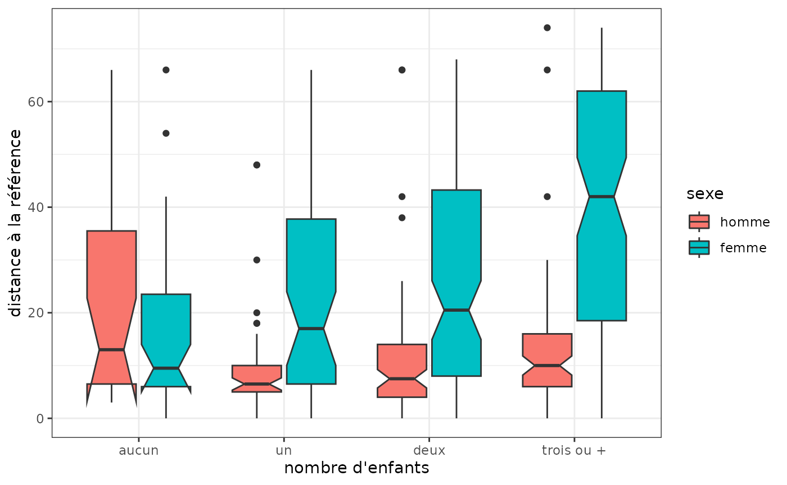
Distances inter ou intra-groupes
On compare les distances entre les trajectoires féminines et les distances entre trajectoires masculines. Les trajectoires masculines sont nettement plus homogènes ou, pour le dire autrement, celles des femmes sont plus diversifiées.
# distances intra-classes selon le sexe
sapply(levels(socdem$sexe), function(x) round(mean(dissim[socdem$sexe==x,socdem$sexe==x]),1))homme femme
18.8 38.1 La matrice de distance entre trajectoires peut être résumée graphiquement à partir d’un multidimensional scaling (MDS). On représente ici le nuage des individus dans le plan formé par les deux premiers axes, en colorant les points selon leur classe, puis on projette le sexe en variable supplémentaire. On observe par exemple que, sur le premier axe, les classes 1 et 2 s’opposent aux autres, et que les hommes sont du côté des classes 1 et 2.
mds <- cmdscale(dissim, k=2)
plot(mds, type='n', xlab="axe 1", ylab="axe 2")
abline(h=0, v=0, lty=2, col='lightgray')
points(mds, pch=20, col=part)
legend('topleft', paste('classe',1:nbcl), pch=20, col=1:nbcl, cex=0.8)
text(aggregate(mds, list(socdem$sexe), mean)[,-1], levels(socdem$sexe), col='orange', cex=1, font=2)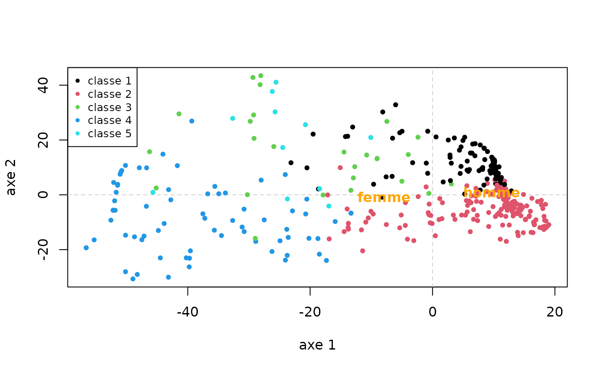
Indicateurs synthétiques
On peut étudier la distribution d’indicateurs synthétisant les trajectoires en fonction d’autres caractéristiques des individus. Par exemple, le temps passé dans les différents états selon le sexe : on voit apparaître le poids de l’inactivité dans les trajectoires féminines.
# durées dans les états selon le sexe
dur <- seqistatd(seqact)
durees_sexe <- aggregate(dur, by=list(socdem$sexe), function(x) round(mean(x),1))
rownames(durees_sexe) <- NULL
colnames(durees_sexe) <- c("classe",labs)
durees_sexe classe études temps plein temps partiel petits boulots inactivité
1 homme 5.5 27.7 0.4 1.2 0.9
2 femme 5.6 19.8 2.3 1.6 7.7
serv. militaire
1 1.3
2 0.0On donne maintenant un exemple d’indicateur de complexité des trajectoires, la turbulence, croisé avec l’année de naissance. On ne constate pas d’évolution notable.
# turbulence
turbu <- aggregate(seqST(seqact), list(socdem$annais), mean)
plot(turbu, type='l', ylim=c(0,10), xlab='Année de naissance')D’autres indicateurs de complexité des trajectoires peuvent être
calculés facilement : indice de complexité (fonction
seqici), entropie individuelle (fonction
seqient), nombre de transitions (fonction
seqtransn).
Analyse de variance
Avec une variable explicative unique, on mesure la part de la variance des dissimilarités expliquée par la variable (à l’aide d’un pseudo-R2), ainsi qu’une mesure de la variabilité des trajectoires pour chacune des modalités de la variable, i.e. dans chaque sous-population. Dans notre exemple, le sexe explique 7,4% de la variance des distances entre trajectoires d’emploi (cf pseudo R2 dans la rubrique Test values), et la variabilité des trajectoires est nettement plus élevée chez les femmes que chez les hommes (19,1 contre 9,4, cf rubrique Discrepancy per level).
# analyse de variance avec le sexe comme facteur
dissassoc(dissim, socdem$sexe)Pseudo ANOVA table:
SS df MSE
Exp 591.0611 1 591.06114
Res 7347.0429 498 14.75310
Total 7938.1040 499 15.90802
Test values (p-values based on 1000 permutation):
t0 p.value
Pseudo F 40.06352676 0.001
Pseudo Fbf 42.94304887 0.001
Pseudo R2 0.07445873 0.001
Bartlett 29.68308216 0.001
Levene 123.83930458 0.001
Inconclusive intervals:
0.00383 < 0.01 < 0.0162
0.03649 < 0.05 < 0.0635
Discrepancy per level:
n discrepancy
homme 226 9.383918
femme 274 19.074005
Total 500 15.876208Il est possible de détailler ces indicateurs pour chaque position dans le temps des trajectoires. Ainsi, la part de variance expliquée par le sexe est presque nulle en début de trajectoire, elle croît ensuite fortement entre 18 ans et environ 30 ans (elle est alors de 14%), puis diminue pour n’être plus que de 5% à 50 ans.
# analyse de variance selon la position dans le temps
diff <- seqdiff(seqact, group=socdem$sexe)
rownames(diff$stat) <- rownames(diff$discrepancy) <- 14:49
plot(diff, stat="Pseudo R2")La variabilité des trajectoires des femmes et des hommes est faible en début de trajectoire et augmente jusqu’à l’âge de 21 ans. Les résultats divergent ensuite selon le sexe: la variabilité des trajectoires féminines se maintient jusqu’à 50 ans, alors que celle des hommes diminue fortement après 21 ans et atteint un niveau très faible entre 30 et 50 ans.
pal <- brewer.pal(ncol(diff$discrepancy), "Set2")
plot(diff, stat="discrepancy", legend.pos=NA, col=pal, lwd=1.5)
legend('topright', fill=pal, legend=colnames(diff$discrepancy), cex=0.7)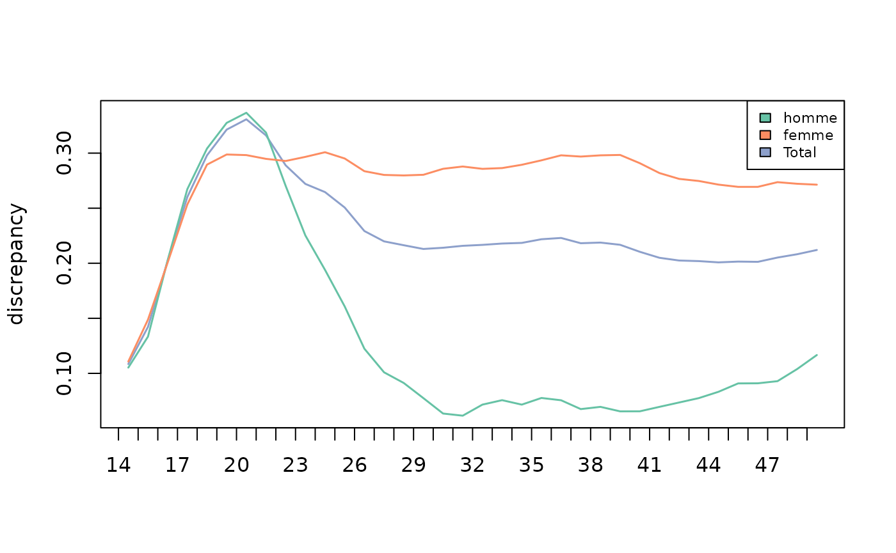
Avec plusieurs variables explicatives, on obtient la part de variance expliquée par l’ensemble des variables et la décomposition de cette part entre les variables. Ici, l’année de naissance, le sexe, le niveau de diplôme et le nombre d’enfants expliquent ensemble 16,2% de la variance des dissimilarités entre les trajectoires d’emploi: 7,7% pour le sexe, 6,0% pour le diplôme, 2,1% pour le nombre d’enfants et 0,3% pour l’année de naissance.
# analyse de la variance avec facteurs multiples
dissmfacw(dissim ~ annais+nbenf+sexe+diplome, data=socdem) Variable PseudoF PseudoR2 p_value
1 annais 1.939020 0.003308502 0.042
2 nbenf 4.147849 0.021232117 0.001
3 sexe 45.251273 0.077211134 0.001
4 diplome 11.654366 0.059656674 0.001
5 Total 11.883983 0.162218781 0.001
Inconclusive intervals:
0.00383 < 0.01 < 0.0162
0.03649 < 0.05 < 0.0635 Enfin, l’analyse de variance peut servir à construire un arbre de décision, dit aussi arbre d’induction.
# arbre d'induction
arbre <- seqtree(seqact ~ annais+nbenf+sexe+diplome, data=socdem, diss=dissim, min.size=0.1, max.depth=3)L’arbre peut être présenté sous forme textuelle ou graphique. A
noter, la représentation graphique nécessite l’installation du logiciel
GraphViz (cf l’aide de la function seqtreedisplay).
Comme précédemment, on constate que la variable qui explique la plus grande part de variance des dissimilarités est le sexe. Ensuite, pour les femmes, la variable la plus discriminante est le nombre d’enfants et, plus précisément, le fait d’avoir ou non trois enfants ou plus. L’inactivité et, secondairement, le temps partiel sont plus présents dans les trajectoires des femmes ayant au moins trois enfants que dans celles des autres. Chez les hommes, en revanche, c’est le niveau de diplôme qui est le plus discriminant (les hommes entrent plus tard sur le marché du travail lorsqu’ils ont un diplôme supérieur ou égal au baccalauréat).
# résultats de l'arbre sous forme textuelle
print(arbre)Dissimilarity tree:
Parameters: min.size=50, max.depth=3, R=1000, pval=0.01
Formula: seqact ~ annais + nbenf + sexe + diplome
Global R2: 0.12934
Fitted tree:
|-- Root (n: 500 disc: 15.876)
|-> sexe 0.074459
|-- [ homme ] (n: 226 disc: 9.3839)
|-> diplome 0.093027
|-- [ aucun,<bac ] (n: 131 disc: 8.5907)[(1,4)-(2,3)-(6,1)-(2,29)] *
|-- [ bac,>bac ] (n: 95 disc: 8.401)[(1,9)-(2,28)] *
|-- [ femme ] (n: 274 disc: 19.074)
|-> nbenf 0.045614
|-- [ trois ou + ] (n: 86 disc: 21.168)[(1,4)-(2,10)-(5,13)-(2,10)] *
|-- [ aucun,un,deux ] (n: 188 disc: 16.848)[(1,6)-(2,31)] *
# résultats de l'arbre sous forme graphique
seqtreedisplay(arbre,type="d",border=NA,show.depth=TRUE)
Statistiques implicatives
Pour étudier la manière dont les trajectoires diffèrent entre plusieurs sous-populations, Studer propose d’utiliser les statistiques implicatives. Il s’agit de reconstituer, pour chaque population, la séquence des états typiques (Studer, 2012; Struffolino et al, 2016).
Ici, le service militaire est typique des trajectoires des hommes autour de 20 ans, puis c’est l’emploi à temps plein à partir de 25 ans. L’inactivité est caractéristique des trajectoires des femmes, et cela dès l’âge de 18 ans. L’emploi à temps partiel l’est également, mais de manière moins marquée et à partir de 30 ans.
# statistiques implicatives
implic <- seqimplic(seqact, group=socdem$sexe)
# par(mar=c(2,2,2,2))
plot(implic, xtlab=14:50, lwd=2, conf.level=c(0.95, 0.99), cex.legend=0.7)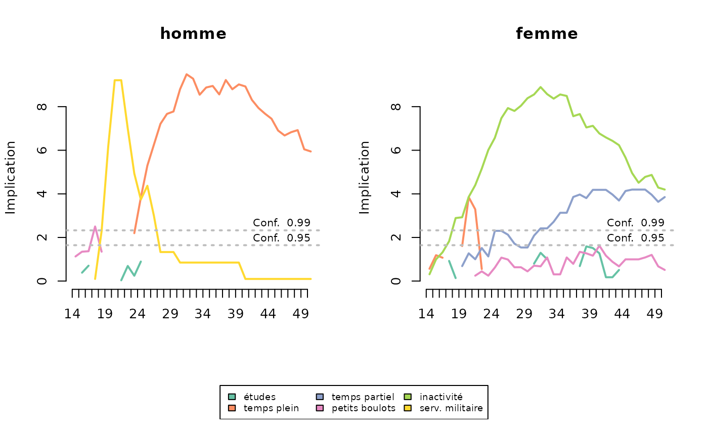
Analyse de séquences multidimensionnelles
Mise en route
On commence par charger les données correspondant à trois dimensions des trajectoires de 500 individus tirés au sort dans l’enquête Biographies et entourage - matrimoniale, parentale et résidentielle - et observées de 14 à 35 ans.
data(seqmsa)
trajmat <- seqmsa %>% select(starts_with('smat'))
str(trajmat)'data.frame': 500 obs. of 22 variables:
$ smat14: num 1 1 1 1 1 1 1 1 1 1 ...
$ smat15: num 1 1 1 1 1 1 1 1 1 1 ...
$ smat16: num 1 1 1 1 1 1 1 1 1 1 ...
$ smat17: num 1 1 1 1 1 1 1 1 1 1 ...
$ smat18: num 1 1 1 1 1 1 1 1 1 1 ...
$ smat19: num 1 1 1 1 1 1 1 1 1 1 ...
$ smat20: num 1 3 1 1 3 1 1 1 1 1 ...
$ smat21: num 1 3 1 1 3 3 1 3 1 1 ...
$ smat22: num 1 3 1 3 3 3 1 3 1 1 ...
$ smat23: num 1 3 1 3 3 3 1 3 1 1 ...
$ smat24: num 1 3 1 3 3 3 1 3 1 1 ...
$ smat25: num 1 3 3 3 3 3 1 3 2 1 ...
$ smat26: num 2 3 3 3 3 3 1 3 2 1 ...
$ smat27: num 2 3 3 3 3 3 1 3 2 1 ...
$ smat28: num 2 3 3 3 3 3 1 3 3 1 ...
$ smat29: num 2 3 3 3 3 3 1 3 3 1 ...
$ smat30: num 2 3 3 3 3 3 1 3 3 1 ...
$ smat31: num 3 3 3 3 3 3 1 3 3 1 ...
$ smat32: num 3 3 3 3 2 3 1 3 3 1 ...
$ smat33: num 3 3 3 3 2 3 3 3 3 1 ...
$ smat34: num 3 3 3 3 2 3 3 3 3 1 ...
$ smat35: num 3 3 3 3 2 3 3 3 3 1 ...
trajenf <- seqmsa %>% select(starts_with('nenf'))
str(trajenf)'data.frame': 500 obs. of 22 variables:
$ nenf14: num 0 0 0 0 0 0 0 0 0 0 ...
$ nenf15: num 0 0 0 0 0 0 0 0 0 0 ...
$ nenf16: num 0 0 0 0 0 0 0 0 0 0 ...
$ nenf17: num 0 0 0 0 0 0 0 0 0 0 ...
$ nenf18: num 0 0 0 0 0 0 0 0 0 0 ...
$ nenf19: num 0 0 0 0 0 0 0 0 0 0 ...
$ nenf20: num 0 0 0 0 1 0 0 0 0 0 ...
$ nenf21: num 0 1 0 0 1 0 0 0 0 0 ...
$ nenf22: num 0 1 0 0 1 0 0 0 0 0 ...
$ nenf23: num 0 1 0 0 1 0 0 0 0 0 ...
$ nenf24: num 0 1 0 0 1 1 0 0 0 0 ...
$ nenf25: num 0 1 0 1 1 1 0 1 0 0 ...
$ nenf26: num 0 1 0 1 1 1 0 1 2 0 ...
$ nenf27: num 0 1 0 1 1 1 0 1 2 0 ...
$ nenf28: num 0 1 1 1 1 1 0 2 3 0 ...
$ nenf29: num 0 2 1 2 1 1 0 2 3 0 ...
$ nenf30: num 0 2 2 2 1 1 0 3 3 0 ...
$ nenf31: num 1 2 2 2 1 1 0 3 3 0 ...
$ nenf32: num 1 2 2 2 1 1 0 3 3 0 ...
$ nenf33: num 1 2 2 2 2 1 0 3 3 0 ...
$ nenf34: num 1 2 2 2 2 1 0 3 3 0 ...
$ nenf35: num 1 2 2 2 2 1 0 3 3 0 ...
trajlog <- seqmsa %>% select(starts_with('slog'))
str(trajlog)'data.frame': 500 obs. of 22 variables:
$ slog14: num 0 0 0 0 0 0 0 0 0 0 ...
$ slog15: num 0 0 0 0 0 0 0 0 0 0 ...
$ slog16: num 0 0 0 0 0 0 0 0 0 0 ...
$ slog17: num 0 0 0 0 0 0 0 0 1 0 ...
$ slog18: num 0 0 0 0 0 0 0 0 1 0 ...
$ slog19: num 0 0 0 0 0 1 0 0 1 0 ...
$ slog20: num 0 0 0 0 1 1 0 0 0 0 ...
$ slog21: num 0 0 0 0 1 0 0 0 0 0 ...
$ slog22: num 0 1 0 1 1 0 0 0 1 0 ...
$ slog23: num 0 1 0 1 1 1 0 1 1 0 ...
$ slog24: num 0 1 0 1 1 1 0 1 1 0 ...
$ slog25: num 0 1 1 1 1 1 0 1 1 0 ...
$ slog26: num 1 1 1 1 1 1 0 1 1 0 ...
$ slog27: num 1 1 1 1 1 1 0 1 1 1 ...
$ slog28: num 1 1 1 1 1 1 0 1 1 1 ...
$ slog29: num 1 1 1 1 1 1 0 1 1 1 ...
$ slog30: num 1 1 1 1 1 1 0 1 1 1 ...
$ slog31: num 1 1 1 1 1 1 0 1 1 1 ...
$ slog32: num 1 1 1 1 1 1 0 1 1 1 ...
$ slog33: num 1 1 1 1 1 1 0 1 1 1 ...
$ slog34: num 1 1 1 1 1 1 0 1 1 1 ...
$ slog35: num 1 1 1 1 1 1 1 1 1 1 ...On définit ensuite trois objets séquences (un par dimension).
# définition de la trajectoire matrimoniale
labs <- c("jamais","union libre","marié","separé")
palette <- brewer.pal(length(labs), 'Set2')
seqmat <- seqdef(trajmat, labels=labs, cpal=palette)
# définition de la trajectoire parentale
labs <- c("0","1","2","3+")
palette <- brewer.pal(length(labs), 'YlOrRd')
seqenf <- seqdef(trajenf, labels=labs, cpal=palette)
# définition de la trajectoire d'indépendance résidentielle
labs <- c("non indépendant","indépendant")
palette <- brewer.pal(3, 'Set1')[1:2]
seqlog <- seqdef(trajlog, labels=labs, cpal=palette)Association entre dimensions
On calcule la matrice de distance de chacune des dimensions, en utisant l’Optimal Matching (coût de substitution unique et égal à 2, coût indel de 1,5).
# matrices de distances des différentes dimensions
dmat <- seqdist(seqmat, method="OM", indel=1.5, sm=seqsubm(seqmat,"CONSTANT",cval=2))
denf <- seqdist(seqenf, method="OM", indel=1.5, sm=seqsubm(seqenf,"CONSTANT",cval=2))
dlog <- seqdist(seqlog, method="OM", indel=1.5, sm=seqsubm(seqlog,"CONSTANT",cval=2))On calcule également une matrice de distance à partir d’une analyse de séquences multiples (dite aussi “multichannel sequence analysis”). On décide ici de garder les mêmes coûts pour chacune des dimensions, mais ce n’est pas obligatoire.
# matrice de distances entre séquences multidimensionnelles
dissim.MSA <- seqdistmc(list(seqmat,seqenf,seqlog), method="OM", indel=1.5, sm=as.list(rep("CONSTANT",3)), cval=2)On étudie ensuite dans quelle mesure les différentes dimensions sont liées, ce qui peut être réalisé de plusieurs manières (Piccarreta, 2017). D’après les corrélations, on voit que la dimension logement (“log”) est la moins liée à la matrice de distance entre séquences multiples (appelée ici “jsa” pour Joint Sequence Analysis). Elle est de plus très peu associée à la dimension parentale (“enf”). Les dimensions matrimoniale (“mat”) et parentales sont les plus liées. L’examen des alpha de Cronbach confirme ces résultats.
asso <- assoc.domains(list(dmat,denf,dlog), c('mat','enf','log'), dissim.MSA)
asso$correlations
$correlations$pearson
mat enf log jsa
mat 1.000 0.372 0.275 0.797
enf 0.372 1.000 0.090 0.702
log 0.275 0.090 1.000 0.604
jsa 0.797 0.702 0.604 1.000
$correlations$spearman
mat enf log jsa
mat 1.000 0.370 0.280 0.794
enf 0.370 1.000 0.096 0.705
log 0.280 0.096 1.000 0.565
jsa 0.794 0.705 0.565 1.000
$`mean squared correlations`
$`mean squared correlations`$pearson
[1] 0.498
$`mean squared correlations`$spearman
[1] 0.483
$`Cronbach's alpha`
$`Cronbach's alpha`$`(mat,enf,log)`
[1] 0.494
$`Cronbach's alpha`$`(mat,enf)`
[1] 0.542
$`Cronbach's alpha`$`(mat,log)`
[1] 0.431
$`Cronbach's alpha`$`(enf,log)`
[1] 0.166On peut encore se faire une idée de la structure des associations entre dimensions en réalisant une analyse en composantes principales (ACP) de la matrice de corrélation entre dimensions.
# ACP à partir des corrélations entre dimensions
matcor <- asso$correlations$pearson[1:3,1:3]
PCA <- PCA(matcor, scale.unit=F, graph=F)
plot.PCA(PCA, choix='varcor')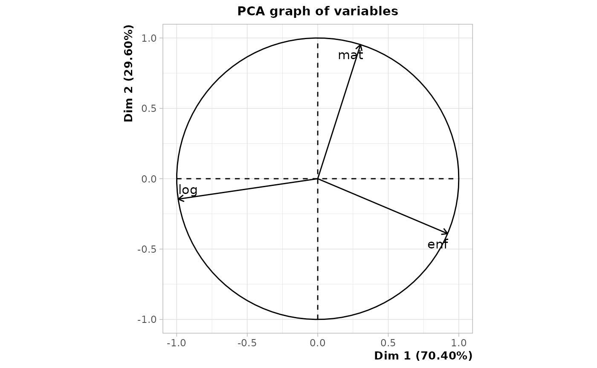
On calcule ensuite plusieurs matrices de distance entre séquences multiples en excluant à chaque l’une des dimensions.
dnolog <- seqdistmc(list(seqmat,seqenf), method="OM", indel=1.5, sm=as.list(rep("CONSTANT",2)), cval=2)
dnomat <- seqdistmc(list(seqenf,seqlog), method="OM", indel=1.5, sm=as.list(rep("CONSTANT",2)), cval=2)
dnoenf <- seqdistmc(list(seqmat,seqlog), method="OM", indel=1.5, sm=as.list(rep("CONSTANT",2)), cval=2)
dnolog <- as.numeric(as.dist(dnolog))
dnomat <- as.numeric(as.dist(dnomat))
dnoenf <- as.numeric(as.dist(dnoenf))On examine ensuite, pour chaque dimension, la corrélation entre sa matrice de distance et la matrice de distance entre séquences multiples excluant cette dimension. Une fois encore, on voit que c’est la dimension logement qui est la moins associée aux autres.
[1] 0.418[1] 0.304[1] 0.216Une dernière option consiste à trier les index plots de toutes les dimensions selon les résultats d’un multidimensional scaling (MDS) réalisé pour une seule dimension (Piccarreta & Lior, 2010). Ici, on trie les séquences à partir d’un MDS de la dimension matrimoniale. L’ordre des séquences des deux autres dimensions semble obéir à une logique interprétable, on peut donc considérer que les dimensions sont suffisamment liées entre elles pour justifier une analyse de séquences multiples.
mds.msa <- cmdscale(dmat,k=1)
par(mfrow=c(3,2), mar=c(2.1,2.1,2.1,2.1))
seqIplot(seqmat, sortv=mds.msa, xtlab=14:35, with.legend=FALSE, yaxis=FALSE, ylab="")
seqlegend(seqmat, cex=0.7)
seqIplot(seqenf, sortv=mds.msa, xtlab=14:35, with.legend=FALSE, yaxis=FALSE, ylab="")
seqlegend(seqenf, cex=0.7)
seqIplot(seqlog, sortv=mds.msa, xtlab=14:35, with.legend=FALSE, yaxis=FALSE, ylab="")
seqlegend(seqlog, cex=0.7)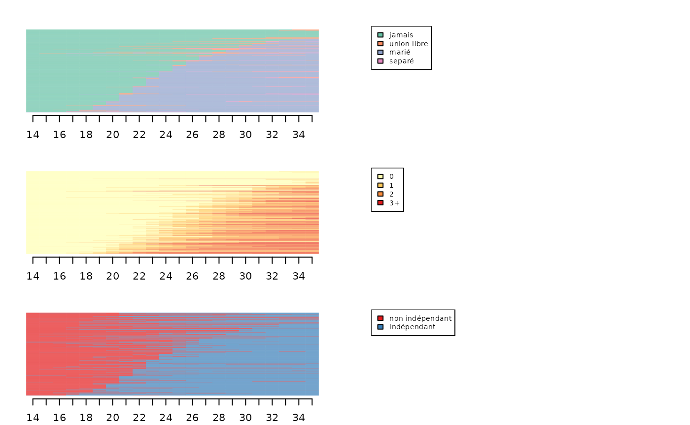
Typologie de séquences via Multidimensional Sequence Analysis (MSA)
Pour obtenir une typologie, on réalise une CAH à partir de la matrice de distance issue de l’analyse de séquences multiples.
# classification ascendante hiérarchique
agnes.MSA <- agnes(as.dist(dissim.MSA), method="ward", keep.diss=FALSE)
plot(as.dendrogram(agnes.MSA), leaflab="none")On opte pour une typologie en 5 classes.
# choix d'une typologie en 5 classes
nbcl.MSA <- 5
part.MSA <- cutree(agnes.MSA, nbcl.MSA) %>% factorPour obtenir les chronogrammes des classes de la typologie (un graphique par classe et par dimension) :
# chronogrammes de la typologie
par(mfrow=c(3,nbcl.MSA+1), mar=c(2.5, 2.1, 2.1, 2.1))
for(i in 1:nbcl.MSA) seqdplot(seqmat[part.MSA==i,], xtlab=14:35, border=NA, with.legend=FALSE, main=paste('classe',i))
seqlegend(seqmat, cex=0.5)
for(i in 1:nbcl.MSA) seqdplot(seqenf[part.MSA==i,], xtlab=14:35, border=NA, with.legend=FALSE)
seqlegend(seqenf, cex=0.5)
for(i in 1:nbcl.MSA) seqdplot(seqlog[part.MSA==i,], xtlab=14:35, border=NA, with.legend=FALSE)
seqlegend(seqlog, cex=0.5)Typologie de séquences via Globally Interdependent Multiple Sequence Analysis (GIMSA)
Une alternative à l’analyse de séquences multiples est la Globally Interdependent Multiple Sequence Analysis (GIMSA, voir Robette et al, 2015).
On commence par charger les données et les coder sous forme de séquences. Il s’agit de : - 400 trajectoires professionnelles de mères, observées entre 14 et 60 ans avec les états suivants: indépendante, catégorie socioprofessionnelle moyenne/supérieure, catégorie socioprofessionnelle populaire, inactivité, études. - 400 trajectoires d’emploi de leurs filles, observées au cours des 15 premières années après la fin des études, avec les états suivants: études, inactivité, temps partiel , temps plein.
# chargement des données
data(seqgimsa)
trajfilles <- seqgimsa %>% select(starts_with('f'))
str(trajfilles)'data.frame': 400 obs. of 15 variables:
$ f1 : num 4 4 4 4 3 4 4 4 4 4 ...
$ f2 : num 4 4 4 4 4 4 4 4 4 4 ...
$ f3 : num 4 4 4 4 4 4 4 4 4 2 ...
$ f4 : num 4 4 4 4 4 4 4 4 4 2 ...
$ f5 : num 4 4 4 4 4 4 4 2 4 2 ...
$ f6 : num 4 4 4 4 4 4 4 2 4 2 ...
$ f7 : num 4 4 4 4 4 4 4 2 4 2 ...
$ f8 : num 4 4 4 2 4 4 4 2 4 2 ...
$ f9 : num 4 4 4 4 4 4 4 2 4 2 ...
$ f10: num 4 4 4 4 4 4 4 2 4 2 ...
$ f11: num 4 4 4 4 4 4 4 2 4 2 ...
$ f12: num 4 4 4 4 4 4 4 2 4 2 ...
$ f13: num 4 4 4 4 4 4 4 2 4 2 ...
$ f14: num 4 4 4 4 4 4 4 2 4 2 ...
$ f15: num 4 4 4 4 4 4 4 2 4 2 ...
trajmeres <- seqgimsa %>% select(starts_with('m'))
str(trajmeres)'data.frame': 400 obs. of 47 variables:
$ m14: num 5 5 9 9 8 8 9 9 9 9 ...
$ m15: num 5 5 9 9 8 8 9 9 9 9 ...
$ m16: num 5 5 9 9 8 8 9 9 9 9 ...
$ m17: num 5 5 9 9 8 8 9 9 9 9 ...
$ m18: num 5 5 9 3 8 8 9 9 3 5 ...
$ m19: num 5 5 9 3 8 8 9 9 3 5 ...
$ m20: num 5 5 9 3 8 8 9 9 3 5 ...
$ m21: num 5 5 9 3 8 8 9 5 3 5 ...
$ m22: num 5 5 9 3 8 8 9 5 3 5 ...
$ m23: num 5 5 9 3 8 8 9 5 3 5 ...
$ m24: num 5 5 9 3 8 8 9 5 3 8 ...
$ m25: num 5 5 9 3 8 8 1 5 3 8 ...
$ m26: num 5 5 9 3 8 8 1 5 3 8 ...
$ m27: num 5 5 9 3 8 8 1 5 3 8 ...
$ m28: num 5 5 9 3 8 8 1 5 3 8 ...
$ m29: num 5 5 9 3 8 8 1 5 3 8 ...
$ m30: num 5 5 9 8 8 8 1 5 3 8 ...
$ m31: num 5 5 9 8 8 8 1 5 3 8 ...
$ m32: num 5 5 9 8 8 8 1 5 3 8 ...
$ m33: num 5 5 9 8 8 8 1 5 3 8 ...
$ m34: num 5 5 8 8 8 8 1 5 3 8 ...
$ m35: num 5 5 8 8 8 8 1 5 3 8 ...
$ m36: num 5 5 8 8 8 8 1 5 3 8 ...
$ m37: num 5 5 8 8 8 8 1 5 3 8 ...
$ m38: num 5 5 8 8 8 8 1 5 3 8 ...
$ m39: num 5 5 8 8 8 8 1 5 3 8 ...
$ m40: num 5 5 8 8 8 8 1 5 3 8 ...
$ m41: num 5 5 5 8 8 8 1 5 3 8 ...
$ m42: num 5 5 5 8 8 8 1 5 3 8 ...
$ m43: num 5 5 5 8 8 8 1 5 3 8 ...
$ m44: num 5 5 5 8 8 8 1 5 3 8 ...
$ m45: num 5 5 5 8 8 8 1 5 3 8 ...
$ m46: num 5 5 5 8 8 8 1 5 3 8 ...
$ m47: num 5 5 5 8 8 8 1 5 3 8 ...
$ m48: num 5 5 5 8 8 8 1 5 3 8 ...
$ m49: num 8 5 5 9 8 8 1 5 3 8 ...
$ m50: num 8 5 5 9 8 8 1 5 3 8 ...
$ m51: num 8 5 5 9 8 8 1 5 3 8 ...
$ m52: num 8 5 5 9 8 8 1 5 3 8 ...
$ m53: num 8 5 5 9 8 8 1 5 8 8 ...
$ m54: num 8 5 5 9 8 8 1 5 8 8 ...
$ m55: num 8 5 5 9 8 8 1 5 8 8 ...
$ m56: num 8 5 5 9 8 8 1 5 8 8 ...
$ m57: num 8 5 5 9 8 8 1 5 8 8 ...
$ m58: num 8 5 5 9 8 8 1 5 8 8 ...
$ m59: num 8 5 5 9 8 8 1 5 8 8 ...
$ m60: num 8 8 5 9 8 8 1 8 8 8 ...
# définition des séquences
lab.meres <- c("indép","moyen/sup","popu","inactivité","études")
pal.meres <- brewer.pal(5, "Set1")
seqmeres <- seqdef(trajmeres,lab=lab.meres, cpal=pal.meres)
lab.filles <- c("études","inactivité","temps partiel","temps plein")
pal.meres <- brewer.pal(4, "Set1")
seqfilles <- seqdef(trajfilles,lab=lab.filles, cpla=pal.filles)La première étape consiste à calculer une matrice de distance pour les mères et une pour les filles. On utilise la métrique LCS pour les mères et la distance de Hamming pour les filles.
# étape 1 : mesure de dissimilarité
dmeres <- seqdist(seqmeres,method="LCS")
cout.filles <- seqsubm(seqfilles, method="CONSTANT", cval=2)
dfilles <- seqdist(seqfilles, method="HAM", sm=cout.filles)Dans la seconde étape, on résume les matrices de distance à partir d’un MDS.
# étape 2 : multidimensional scaling
mds.meres <- cmdscale(dmeres, k=20, eig=TRUE)
mds.filles <- cmdscale(dfilles, k=20, eig=TRUE)On sélectionne le nombre de facteurs à retenir pour chacun des MDS.
# choix du nombre de dimensions à retenir pour les mères
par(mfrow=c(1,2))
# mesure de stress
seqmds.stress(dmeres, mds.meres) %>% plot(type='l', xlab='nombre de facteurs', ylab='stress')
# part de variance expliquée
(mds.meres$eig[1:10]/mds.meres$eig[1]) %>% plot(type='s', xlab='nombre de facteurs', ylab='part de variance expliquée')
# choix du nombre de dimensions à retenir pour les filles
par(mfrow=c(1,2))
# mesure de stress
seqmds.stress(dfilles, mds.filles) %>% plot(type='l', xlab='nombre de facteurs', ylab='stress')
# part de variance expliquée
(mds.filles$eig[1:10]/mds.filles$eig[1]) %>% plot(type='s', xlab='nombre de facteurs', ylab='part de variance expliquée')Dans la troisième étape, on résume les relations entre les résultats du MDS des mères et ceux du MDS des filles, à l’aide d’une PLS symétrique.
# étape 3 : PLS symétrique
a <- mds.meres$points[,1:5]
b <- mds.filles$points[,1:4]
pls <- symPLS(a,b)Dans la quatrième et dernière étape, on calcule une matrice de distance unique entre les dyades de trajectoires mères-filles. Il est possible de pondérer les dimensions des mères et des filles, pour équilibrer leur contribution aux résultats finaux.
# étape 4 : distance et classification
# pas de pondération
F <- pls$F
G <- pls$G
# pondération par la variance des composantes de la PLS (w1)
F <- apply(pls$F,2,scale,center=FALSE)
G <- apply(pls$G,2,scale,center=FALSE)
# pondération par le nombre de séquences distinctes (w2)
F <- pls$F/nrow(seqtab(seqmeres,tlim=0))
G <- pls$G/nrow(seqtab(seqfilles,tlim=0))
# pondération par la 1ère valeur propre du MDS (w3)
F <- pls$F/mds.meres$eig[1]
G <- pls$G/mds.filles$eig[1]On utilise ici la pondération w1.
# pondération par la variance des composantes de la PLS (w1)
F <- apply(pls$F,2,scale,center=FALSE)
G <- apply(pls$G,2,scale,center=FALSE)
# calcul de distance
diff2 <- function(X) return(as.matrix(dist(X,upper=T,diag=T)^2,nrow=nrow(X)))
D <- (diff2(F)+diff2(G))^0.5On réalise ensuite une classification automatique (ici une CAH).
# classification
dist.GIMSA <- as.dist(D)
agnes.GIMSA <- agnes(dist.GIMSA, method="ward", keep.diss=FALSE)
plot(as.dendrogram(agnes.GIMSA), leaflab="none")On choisit une partition en 5 classes.
Pour finir, on représente graphiquement la typologie à l’aide de chronogrammes.
par(mfrow=c(3,nbcl.GIMSA), mar=c(2.5, 2.1, 2.1, 2.1))
for(i in 1:nbcl.GIMSA) seqdplot(seqmeres[part.GIMSA==i,], xtlab=14:60, border=NA, with.legend=FALSE, main=paste('classe',i))
for(i in 1:nbcl.GIMSA) seqdplot(seqfilles[part.GIMSA==i,], xtlab=1:15, border=NA, with.legend=FALSE)
seqlegend(seqmeres, cex=0.6)
seqlegend(seqfilles, cex=0.6)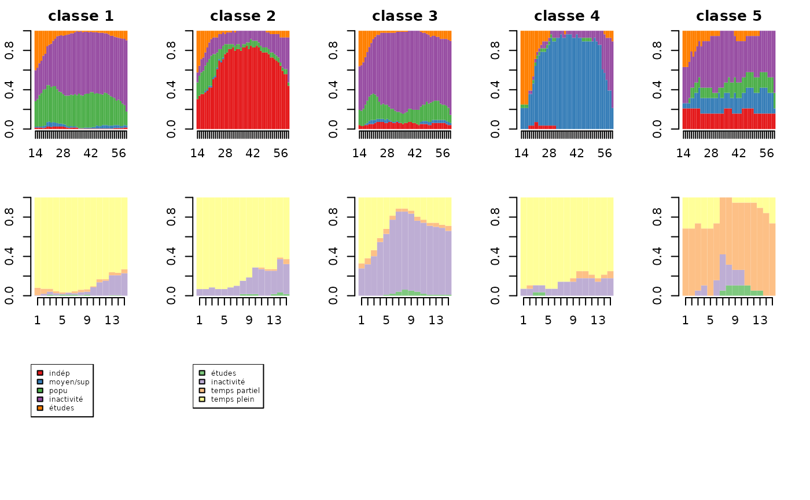